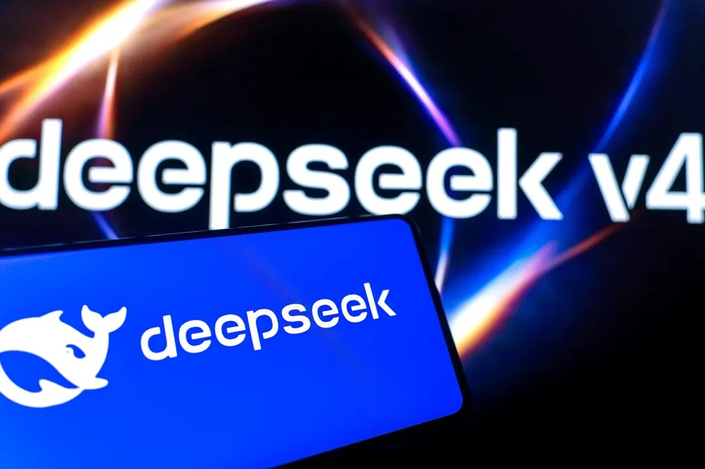
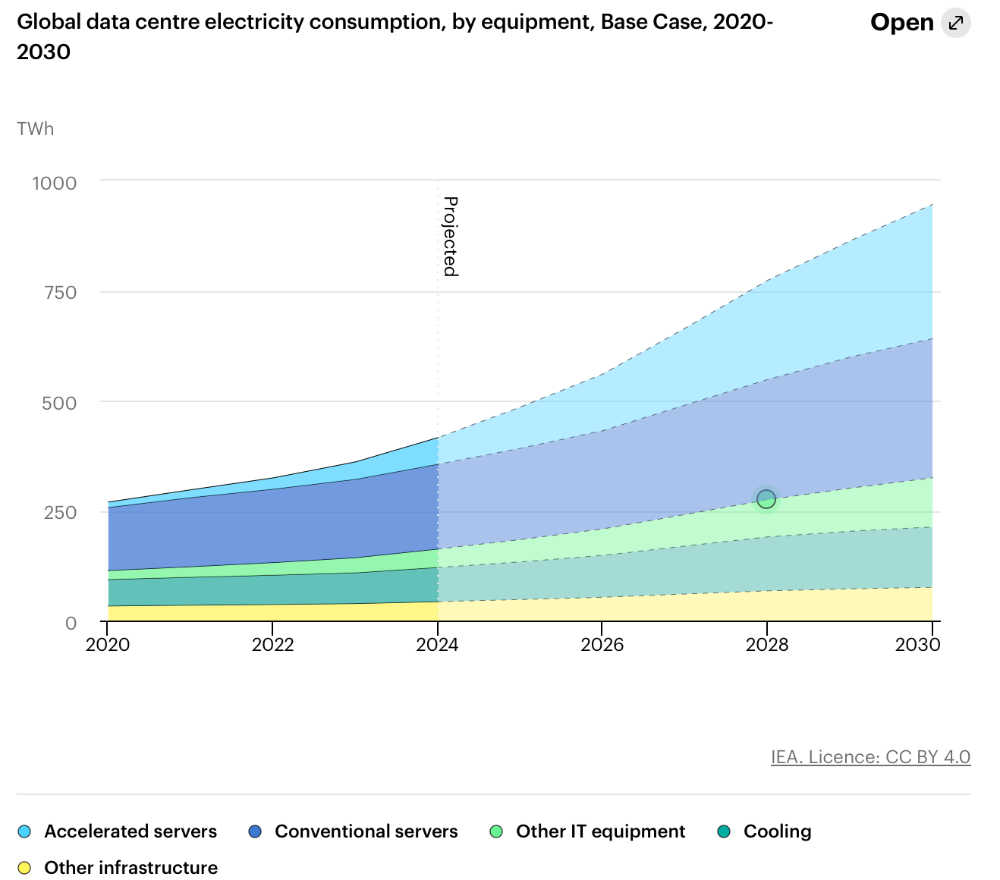
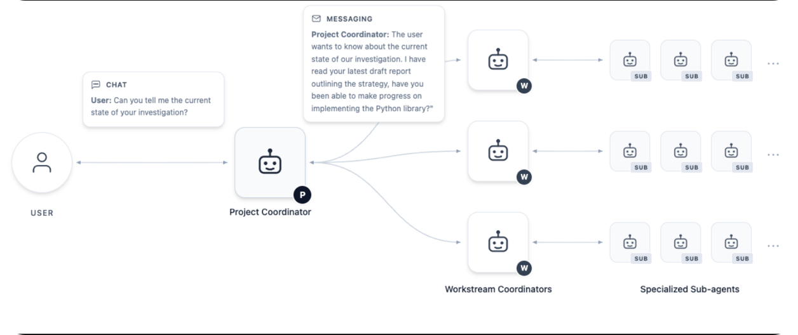

SuuJiKat AI Daily
宁可写少一点，也要写新一点
2026-05-11 · 本周 AI 雷达
本周 AI 雷达，每天更新。
今天先修正一个生产规则：
日报不是周报。旧新闻再重要，也不能每天换个角度重写一遍。
所以今天这篇只收两个时间窗口里的线索：北京时间 2026 年 5 月 11 日出现的新报道、新讨论、新发布；以及美国时间 2026 年 5 月 10 日仍属“今天”的新线索。
宁可少写，也不拿 5 月 5 日、5 月 7 日的新闻来凑数。
AI 的竞争正在从“模型发布”进入“本地运行、视觉工作流、算力账单和安全边界”的细节战。
今日目录
🧑💻 DeepSeek V4 Flash 被塞进 MacBook，本地 agent 成本开始被重新计算
👁️ 智谱 GLM-5V-Turbo 再被讨论，视觉编程正在变成 agent 的真实入口
⚡ IEA 数据中心电力预测被重新引用，AI 成本不只在 token，也在电网
🧮 Google DeepMind AI co-mathematician 刷新数学基准，研究型 agent 继续升温
🧨 Hugging Face / ClawHub 恶意模型与 skill 风险，AI 工作流安全不能再后置
🔎 今天的一个判断：AI 进入本地、视觉、能源和安全层的细节，正在改变工作流
01｜DeepSeek V4 Flash 被塞进 MacBook，本地 agent 成本开始被重新计算
发生了什么
36 氪 5 月 10 日发布文章，讨论了 Redis 作者 Salvatore Sanfilippo，也就是 antirez，最近开源的 ds4 项目。
ds4 是一个面向 DeepSeek V4 Flash 的本地推理引擎，目标是在 Apple Silicon / Metal 环境里跑 DeepSeek V4 Flash。
项目本身已经在 GitHub 公开。它会从 Hugging Face 下载 antirez 转换的 DeepSeek V4 GGUF 文件，并把模型放到本地运行。
36 氪文章提到，这套方案的关键变化是：
· 针对 DeepSeek V4 Flash 做专用推理，而不是泛用模型运行器。
· 用不对称量化压缩 MoE 专家部分。
· 把部分 KV cache 放到 SSD。
· 让高 token 消耗的 coding agent 场景有机会转到本地。
这里要注意：这不是 DeepSeek 官方发布，也不是所有人马上都能稳定复现。它更像一个高水平开发者社区实验。

SuuJiKat 判断
这条新闻真正重要的地方，不是“一台 MacBook 能不能跑大模型”。
真正重要的是：agent 成本开始被本地化重新计算。
过去我们默认 agent 是云端服务：按 token 计费，长上下文、多轮工具调用、反复试错，都意味着账单增加。
但如果一部分高频、低风险、长上下文任务能在本地跑，使用方式会变。本地模型不一定最强，但它有三个优势：边际成本低、数据不出本地、可以被反复嵌入私人工作流。
这对 Harmony 工作流很关键。如果以后一个工作流可以把“低价值重复实验”放在本地，把“高价值判断”交给云端强模型，那么 AI 使用成本会更可控。
这也是国内开源模型出海的另一种路径：不是只靠 API 被调用，而是成为别人本地工具链里的材料。
来源
02｜智谱 GLM-5V-Turbo 再被讨论，视觉编程正在变成 agent 的真实入口
发生了什么
今天中文 AI 信息流里，智谱 GLM-5V-Turbo 被重新讨论。
这不是今天刚发布的新模型。它的官方文档此前已经上线。
但它今天值得放进日报，是因为它和最近的 agent 讨论有关：越来越多开发者不只关心“模型会不会写代码”，而是关心模型能不能看懂界面、截图、设计稿，再把视觉信息转成可执行动作。
智谱官方文档把 GLM-5V-Turbo 定位为“首个多模态 Coding 基座模型”，面向视觉编程任务。它强调：
· 原生理解图片、视频、设计稿等多模态输入。
· 支持画框、截图等多模态工具调用。
· 上下文窗口拓展至 200K。
· 面向 Agent 的感知-行动链路。
SuuJiKat 判断
如果只看代码生成，AI 编程工具已经很卷。
但真正的下一步不是“写更多代码”，而是：让模型看见软件。
人类工程师调试一个页面，不是只读代码。我们会看截图、点按钮、观察布局、发现错位、对照设计稿，再回到代码里改。
纯文本 coding agent 在这一步天然缺一只眼睛。GLM-5V-Turbo 这类视觉编程模型的意义，是把“看见界面”接进 agent 工作流。
这对公众号和创作者也有启发：未来做长图、网页、交互稿，不一定只是把文字丢给模型，而是让模型直接读图、改图、复刻结构、检查排版。这比“帮我写一段 HTML”更接近真实生产。
来源
03｜IEA 数据中心电力预测被重新引用，AI 成本不只在 token，也在电网
发生了什么
今天的中文科技信息流里，AI 数据中心电力成本再次被放到显眼位置。
IEA 的 Energy and AI 报告给了一个值得记住的数字：
全球数据中心用电量到 2030 年预计会翻倍，达到约 945 TWh。
IEA 还提到，AI-focused data centres 的用电增长更快，agentic AI 等更重的使用方式会进一步推高需求。
这不是“今天刚发布”的报告，但今天被重新引用，说明市场开始把 AI 从软件故事重新放回物理世界里看。

SuuJiKat 判断
我们平时说 AI 成本，最容易想到 token。
但 token 只是用户看到的价格单位。在 token 后面，是 GPU、机房、电力、散热、网络、土地、融资成本和电网调度。
这也是为什么最近几天的新闻会同时出现：大模型 App 开始收费，模型公司继续融资，数据中心投资飙升，本地推理项目变多，企业开始重新算 AI ROI。
它们其实都在回答同一个问题：智能到底由谁买单？
如果 AI 要从“偶尔问一下”变成“全天候 agent”，电力和基础设施就不是背景，而是产品的一部分。
对 SuuJiKat 来说，这意味着以后评估一个工作流，不能只看效果，也要看成本曲线。一个能跑一小时的 agent 和一个能每天跑的 agent，是两种完全不同的产品。
来源
04｜Google DeepMind AI co-mathematician 刷新数学基准，研究型 agent 继续升温
发生了什么
今天中文 AI 信息流中，Google DeepMind 的 AI co-mathematician 继续被讨论。
多家英文科技媒体和研究摘要站点提到，这套系统在 FrontierMath Tier 4 上取得约 48% 的成绩，并被描述为一个面向数学研究的人机协作 agent 系统。
和普通“数学题解答器”不同，这类系统强调的是研究流程：
· 拆解问题。
· 生成猜想。
· 尝试证明。
· 检查反例。
· 和人类数学家协作。
这里需要谨慎：目前很多传播来自研究摘要和媒体报道，具体细节仍应以后续论文、官方博客和评测机构公开信息为准。

SuuJiKat 判断
这类新闻容易被写成“AI 又会做数学了”。
但我觉得更值得看的不是分数，而是形态。它不是一个单轮问答模型，而是一个 research agent。
研究型工作和普通问答最大的差别在于：答案不是一次生成出来的，而是在反复尝试、验证、否定和重构中逼近的。
这刚好回到 SuuJiKat 的底层叙事：人类接近智慧的一条路径，是不断实验。
如果 AI co-mathematician 这类系统成立，它代表的不是“AI 替代数学家”，而是把实验循环加速了。
普通创作者也可以借这个思路反推自己的工作流：不要只问模型“给我答案”。要让模型参与“提出假设 - 找证据 - 反驳自己 - 修正判断”的循环。
来源
Google DeepMind AI co-mathematician coverage via 36 氪 AI 今日信息流
AI Co-Mathematician paper summary
DevRadar - Google DeepMind AI Co-Mathematician Achieves 48% on FrontierMath Tier 4
05｜Hugging Face / ClawHub 恶意模型与 skill 风险，AI 工作流安全不能再后置
发生了什么
The Next Web 5 月 8 日报道，Hugging Face 和 ClawHub 等 AI 模型与 agent skill 仓库中出现大量恶意条目。
这条不是今天刚出的新闻，但今天仍然值得放进这篇，是因为它和上面几条“本地运行、agent 工作流、模型仓库”直接相关。
如果你今天开始下载本地模型、安装 agent skill、接入 MCP 工具，那么安全问题就不是抽象风险。它可能涉及：
· 本地文件权限。
· 浏览器控制权限。
· API key。
· 终端执行。
· 云盘、邮箱和工作区数据。
SuuJiKat 判断
这条我保留在今天稿子里，是因为它不是旧闻重复，而是今天所有本地工作流讨论的安全底座。
当模型只是网页聊天框时，风险相对集中在内容真假。但当模型进入本地、终端、浏览器、文件系统、MCP server，风险就变成了执行权限。
任何能行动的 AI 工具，都应该先被当作软件，而不是素材。
不能因为它叫 model、skill、plugin，就默认安全。安装前看来源，运行前看权限，高风险任务放进隔离环境。
AI 越能帮你做事，越要知道它能碰到什么。
来源
今天的一个判断
今天这篇和前几天最大的区别，是我没有强行凑满“大新闻”。
因为日报最怕的不是少，而是旧。
DeepSeek V4 Flash 被社区塞进本地 Mac，说明 agent 成本正在被重新计算。
GLM-5V-Turbo 被重新讨论，说明视觉正在进入 coding agent 的真实工作流。
IEA 数据被反复引用，说明 AI 成本正在从 token 回到电力和数据中心。
AI co-mathematician 继续发酵，说明研究型 agent 的重点不是答案，而是实验循环。
Hugging Face / ClawHub 的恶意模型问题提醒我们，agent 工具越强，安全边界越要前置。
今天的核心判断是：
AI 的下一阶段，不一定每天都有惊天发布，但每天都会在工作流的细节里改变成本、入口和风险。
对 SuuJiKat 来说，之后做日报要守住一个原则：
宁可写少一点，也要写新一点；宁可做判断，也不做旧闻搬运。
SuuJiKat AI Daily｜AIGC 见闻、AI 使用心得与 Harmony 工作流记录。